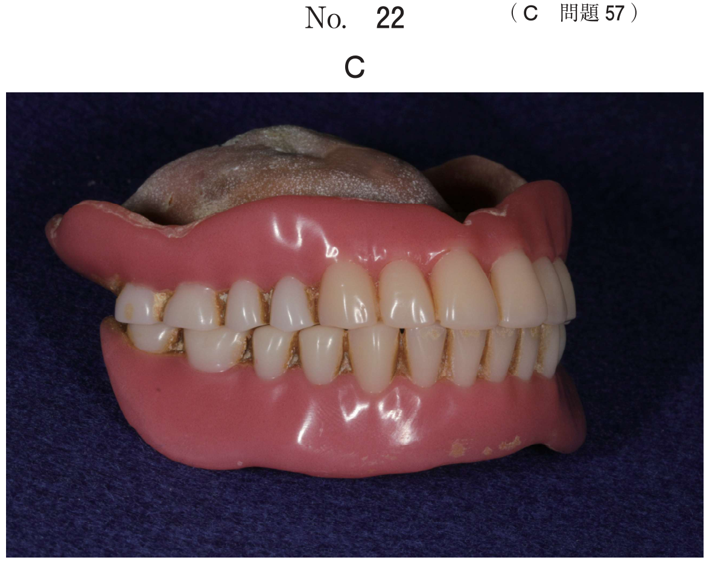
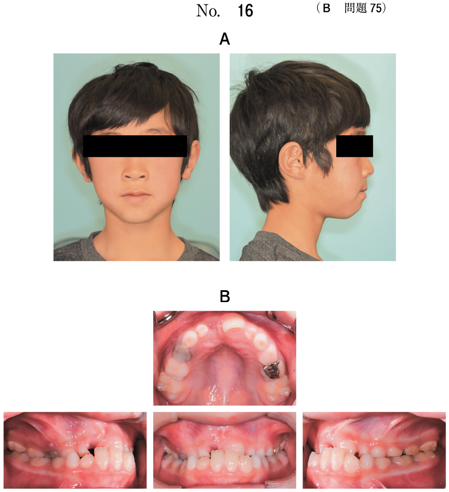
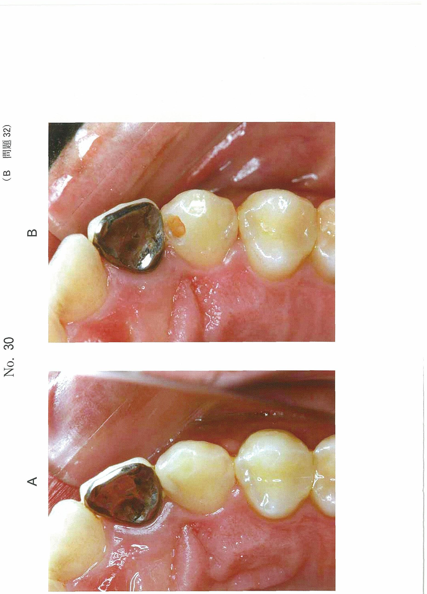
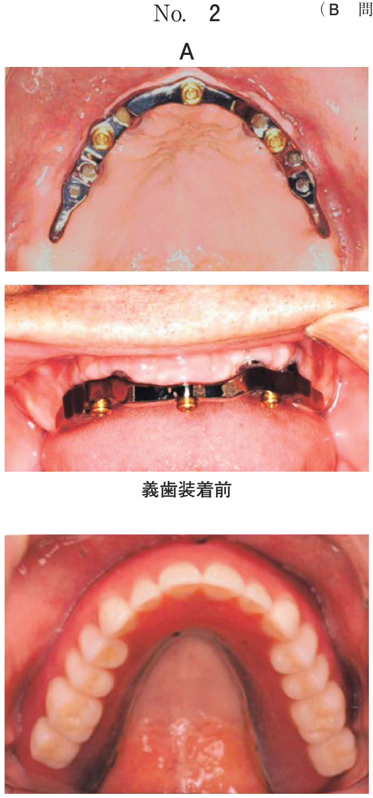
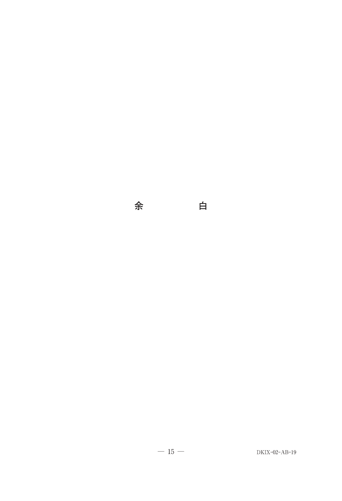

顎関節症の治療
治療の原則
- 必ず保存療法・可逆的療法から行う（難症例でも同様）
- 奏功しない場合に外科療法を検討するが、現在は理学・運動療法が推奨
- 小児・混合歯列期 → まずセルフケアの指導
型別の治療法一覧
| 分類 | 治療法 |
|---|---|
| I型（咀嚼筋障害） | 理学療法（マッサージ、温罨法、運動療法、マイオモニター）、投薬（消炎鎮痛薬、中枢性筋弛緩薬）、スタビライゼーションスプリント、前歯部接触型 |
| II型（顎関節痛障害） | 消炎鎮痛薬の投与、理学療法（運動療法：顎関節可動域訓練）、スタビライゼーションスプリント |
| IIIa型（復位性） | 徒手的関節円板整復術（マニピュレーション）、スタビライゼーションスプリント、前方整位型（リポジショニング型）、消炎鎮痛薬、円板整復運動療法、パンピングマニピュレーション |
| IIIb型（非復位性） | 徒手的関節円板整復術、スタビライゼーションスプリント、臼歯部挙上型（ピボット型）、消炎鎮痛薬、顎関節可動域訓練、パンピングマニピュレーション、関節腔洗浄療法（乳酸リンゲル液）、関節腔内注入療法（ヒアルロン酸） |
| IV型（変形性） | 基本的にはIIIbに準じる。外科的療法、関節腔内注入療法、顎関節の負担軽減（スプリント療法、薬物療法、理学療法） |
スプリント療法 ★最頻出
スプリントの種類と適応
| 種類 | 適応 | 目的・特徴 |
|---|---|---|
| スタビライゼーション型 | I, II, IIIa, IIIb, (IV) | 左右均等な咬合接触を付与。咬合の安定化、咀嚼筋の緊張緩和、顎関節部への過重負担の軽減 |
| 前方整位型（リポジショニング型） | IIIa, IIIb→クリック出現時 | 下顎を前方に誘導しOn the Diskの状態にする。クリックに効果。開咬の副作用あり |
| 臼歯部挙上型（ピボット型） | IIIb→ロック解除目的 | 臼歯部を支点として下顎頭を下方に牽引。開口量の増加、疼痛の緩和 |
| 前歯部接触型 | I型 | 咀嚼筋の過緊張を収める。顎関節部への過重負担は増大 |
スタビライゼーションスプリントの咬合接触 ★頻出
| 咬合位 | 接触部位 |
|---|---|
| 習慣性咬合位（中心咬合位） | 下顎臼歯部頬側咬頭頂が均等に接触 |
| 前方咬合位 | 下顎前歯切縁のみ接触（臼歯部は離開） |
| 側方咬合位（犬歯誘導型） | 作業側は犬歯のみ接触、非作業側は離開 |
※調整時は咬合紙で印記し、均等でない接触点を削合する。
外科的療法
| 治療法 | 内容 |
|---|---|
| パンピングマニピュレーション | 上関節腔に穿刺し、局所麻酔薬またはヒアルロン酸を注入後、顎関節徒手的授動を施行 |
| 上関節腔洗浄療法 | 流入用と排出用の注射針を穿刺し、乳酸リンゲル液で洗浄 |
| 顎関節鏡視下手術 | 関節円板癒着部位の剥離、関節可動域の回復 |
| 顎関節開放手術 | 関節円板切除術、関節円板形成術、下顎頭形成術 |
IIIb型の段階的治療フロー
①セルフケア指導 + NSAIDs → ②下顎可動化訓練（開口訓練）→ ③スプリント療法 → ④パンピングマニピュレーション → ⑤関節腔洗浄療法 → ⑥外科手術
過去問
9歳の女児。右側顎関節雑音を主訴として来院した。1年前から右側顎関節部の開口時のクリック音を自覚するようになったという。咀嚼筋に圧痛はなく、最大開口量は45mmである。初診時の口腔内写真（別冊No.37A）と両側顎関節部MRI（別冊No.37B）を別に示す。
まず行うのはどれか。1つ選べ。


b 矯正歯科治療
c NSAIDsの投与
d スプリント療法
e セルフケアの指導
【解説】9歳の小児（混合歯列期）で、クリック音はあるが疼痛や開口制限がない軽症例。小児の顎関節症ではまずセルフケアの指導（TCH是正、頬杖禁止、大開口回避など）を行う。咬合調整やスプリントは小児には不適切。NSAIDsは疼痛がないため不要。
混合歯列期の顎関節症の対応として最も優先するのはどれか。1つ選べ。
b 咬合調整
c 筋弛緩薬の使用
d スプリントの装着
e セルフケアの指導
【解説】混合歯列期の顎関節症ではセルフケアの指導が最優先。咬合が安定していない時期に咬合調整やスプリントを行うことは不適切。
咀嚼筋痛障害に対する適切な治療法はどれか。3つ選べ。
b パンピング
c スプリント療法
d 筋ストレッチ訓練
e マニピュレーション
【解説】咀嚼筋痛障害＝I型。治療は薬物療法（消炎鎮痛薬・筋弛緩薬）、スプリント療法（スタビライゼーション型）、筋ストレッチ訓練（理学療法）。パンピングマニピュレーションは関節腔内の処置でIIIb型に行う。マニピュレーションは関節円板整復術でIII型に行う。
上顎スタビライゼーションスプリントについて、咬合位と咬合接触部位の組合せで正しいのはどれか。2つ選べ。
b 側方咬合位 ーーーーーーーー 作業側の下顎臼歯部頬側咬頭
c 側方咬合位 ーーーーーーーー 非作業側の下顎臼歯部舌側咬頭
d 習慣性咬合位 ーーーーーーー 下顎臼歯部頰舌側咬頭
e 習慣性咬合位 ーーーーーーー 下顎臼歯部頰側咬頭頂
【解説】スタビライゼーションスプリントの咬合接触：習慣性咬合位では下顎臼歯部頬側咬頭頂が均等に接触（e）。前方咬合位では下顎前歯切縁のみが接触し臼歯部は離開する（a）。側方咬合位では犬歯誘導により作業側犬歯のみ接触し、非作業側は離開する。
顎関節疾患と治療法の組合せで正しいのはどれか。2つ選べ。

b 顎関節症I型 ーーーーー スプリント療法
c 関節突起骨折 ーーーー 頸関節制動術
d 筋突起過長症 ーーーー 関節結節削除術
e 習慣性顎関節脱臼 ーー 筋突起切除術
【解説】顎関節強直症→顎関節授動術（a:正）、顎関節症I型→スプリント療法（b:正）。関節突起骨折→顎間固定が基本（制動術ではない）（c:誤）。筋突起過長症→筋突起切除術（関節結節削除術ではない）（d:誤）。習慣性顎関節脱臼→顎関節制動術（筋突起切除術ではない）（e:誤）。
23歳の女性。開口障害を主訴として来院した。4か月前から右側顎関節のクリック音を自覚していたが、3日前に口が開かなくなったという。右側顎関節部の圧痛と開口時痛を認める。右側顎関節のMRI（別冊No.24A）と切歯点開閉口運動路を正面から観察した図（別冊No.24B）を別に示す。
まず行う対応はどれか。2つ選べ。


b 下顎可動化訓練
c 顎関節円板切除術
d 中枢性筋弛緩薬の投与
e 非ステロイド性抗炎症薬の投与
【解説】クリック音があったが3日前に消失し開口制限→IIIa→IIIb移行（非復位性関節円板障害）。急性期のため、まずNSAIDsで疼痛・炎症を抑え、下顎可動化訓練（開口訓練）で可動域の回復を図る。咬合調整は不可逆的で初期対応として不適切。円板切除術は保存療法無効時に検討。筋弛緩薬はI型向け。
25歳の男性。開口障害を主訴として来院した。4か月前から口が開かなくなり、2か月前から近医にてスプリント治療と疼痛時の消炎鎮痛薬投与とを受けていたという。初診時の最大開口量は30mmで、左側顎関節部の圧痛と開口時痛とを認める。初診時の開口時顔貌写真（別冊No.37A）、エックス線写真（別冊No.37B）及び左側の開閉口時MRI（別冊No.37C）を別に示す。
適切な対応はどれか。1つ選べ。



b 咬合調整
c 顎関節円板切除術
d 関節腔内洗浄療法
e 中枢性筋弛緩薬の投与
【解説】2か月間スプリント治療と消炎鎮痛薬で保存的に治療したが改善しないIIIb型。保存療法が奏功しない場合、次のステップは関節腔内洗浄療法（上関節腔に乳酸リンゲル液を注入して洗浄）。経過観察は不適切。円板切除術は最後の手段。
42歳の女性。顔面部の開口時痛を主訴として来院した。3か月前から頰部に疼痛を認めるという。最大開口量は42mmであり、開口時の顕著な下顎偏位は発現しないものの、咬筋の圧痛が認められた。疼痛を認める部位を指した写真（別冊No.6A）と左側顎関節のMRI（別冊No.6B）を別に示す。
適切な治療法はどれか。2つ選べ。


b ヒアルロン酸の投与
c 副腎皮質ステロイド薬の投与
d パンピングマニピュレーションの実施
e スタビライゼーションスプリントの使用
【解説】頬部疼痛＋咬筋の圧痛＋開口量正常（42mm）→I型（咀嚼筋障害）。治療は筋のストレッチ（理学療法）とスタビライゼーションスプリント。ヒアルロン酸やパンピングは関節腔内の治療でI型には不適切。ステロイド投与も不適切。
35歳の女性。右側咬筋部の疼痛を主訴として来院した。顎関節症Ⅰ型と診断し、犬歯誘導型のスタビライゼーションスプリントによる治療を計画した。初診時の口腔内写真（別冊No.19A）、タッピングでの調整終了時（別冊No.19B）及び側方滑走運動での調整時のスプリントの写真（別冊No.19C、D）を別に示す。
削合すべき部位はどれか。3つ選べ。



b イ
c ウ
d エ
e オ
【解説】犬歯誘導型スタビライゼーションスプリントでは、側方滑走運動時に作業側犬歯のみが接触し、臼歯部と非作業側は離開する。削合すべきは側方運動時に接触している犬歯以外の部位。写真から犬歯誘導を妨げている接触点を削合する。
スタビライゼーションスプリントの調整を行うこととした。中心咬合位における咬合接触部位を印記した写真（別冊No.23）を別に示す。
まず削合すべき部位はどれか。2つ選べ。

b イ
c ウ
d エ
e オ
【解説】中心咬合位での調整は、均等な咬合接触を目指す。咬合紙で印記された接触点のうち、早期接触となっている部位を削合して均等化する。
顎関節疾患の手術を行う際の皮膚切開図（別冊No.14）を別に示す。
矢印で示す切開法を選択する理由はどれか。2つ選べ。

b 浮腫の予防
c 関節包の保護
d Frey症候群の予防
e 顔面神経損傷の回避
【解説】顎関節の外科手術における皮膚切開（耳前側頭部切開：Al-Kayat-Bramley法など）は、十分な術野の確保と顔面神経損傷の回避を目的とする。顔面神経側頭枝は耳前部を走行するため、その走行を避けた切開線が選択される。